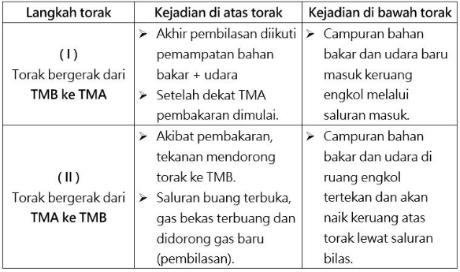

Motor bakar ditinjau dari prinsip kerjanya
- Motor 2 tak
Motor bensin 2 tak adalah motor bensin dimana untuk melakukan suatu kerja diperlukan 2 langkah gerakan piston atau 1 kali putaran poros engkol, seperti gambar dibawah ini
Gambar Motor 2 Tak
Siklus kerja motor bensin 2 tak dapat ditunjukkan sebagai berikut :

- Motor 4 tak
Motor bensin 4 tak adalah motor yang pada setiap empat langkah torak/torak (dua putaran engkol) menghasilkan satu tenaga kerja (satu langkah kerja).

Gambar Motor 4 Tak
Prinsip Kerja Motor 4 tak
-
Langkah hisap
- Piston bergerak dari TMB ke TMA.
- Campuran udara dan bahan bakar dihisap ke dalam silinder.
- Katup hisap terbuka sedangkan katup buang tertutup.
- Waktu piston bergerak ke bawah, menyebabkan ruang silinder menjadi vakum, masuknya campuran udara dan bahan bakar ke dalam silinder disebabkan adanya tekanan udara luar (atmospheric pressure).
-
Langkah kompresi
- Piston bergerak dari TMB ke TMA.
- Katup hisap dan katup buang tertutup.
- Campuran udara dan bahan bakar dikompresikan.
- Akibatnya tekanan dan temperaturnya menjadi naik, sehingga akan mudah terbakar.
-
Langkah usaha
- Piston bergerak dari TMA ke TMB.
- Sesaat sebelum torak mencapai TMA pada saat langkah kompresi, busi memberi loncatan bunga api pada campuran yang telah dikompresikan.
- Dengan terjadinya pembakaran, kekuatan dari tekanan gas pembakaran yang tinggi mendorong torak kebawah.
- Usaha ini yang menjadi tenaga mesin (engine power).
- Mesin menghasilkan tenaga untuk menggerakan kendaraan.
-
Langkah buang
- Piston bergerak dari TMB ke TMA.
- Gas yang terbakar dibuang dari dalam silinder.
- Katup buang terbuka, piston bergerak dari TMB ke TMA mendorong gas bekas pembakaran ke luar dari silinder.
- Ketika torak mencapai TMA, akan mulai bergerak lagi untuk persiapan berikutnya, yaitu langkah hisap.
Video animasi motor 4 tak